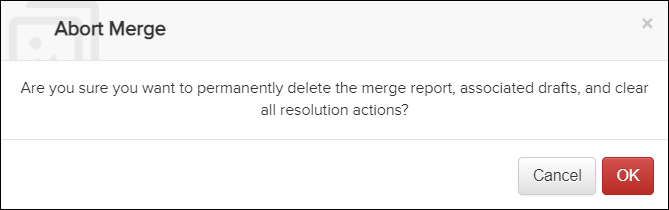
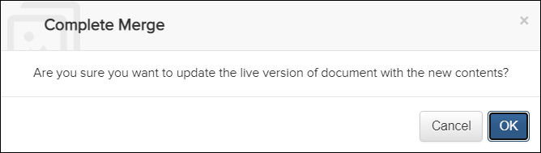

Not applicable for Pinpoint Standalone Light.
Users must have permissions for the Can merge new revisions privilege to view a merge report and resolve conflicts.
A confirmation message appears:

A confirmation message appears:

When the merge is complete, the preview (right-side) version of all the documents in the merge report becomes the approved, live version. This is the version that users will see in the Pinpoint Viewer.